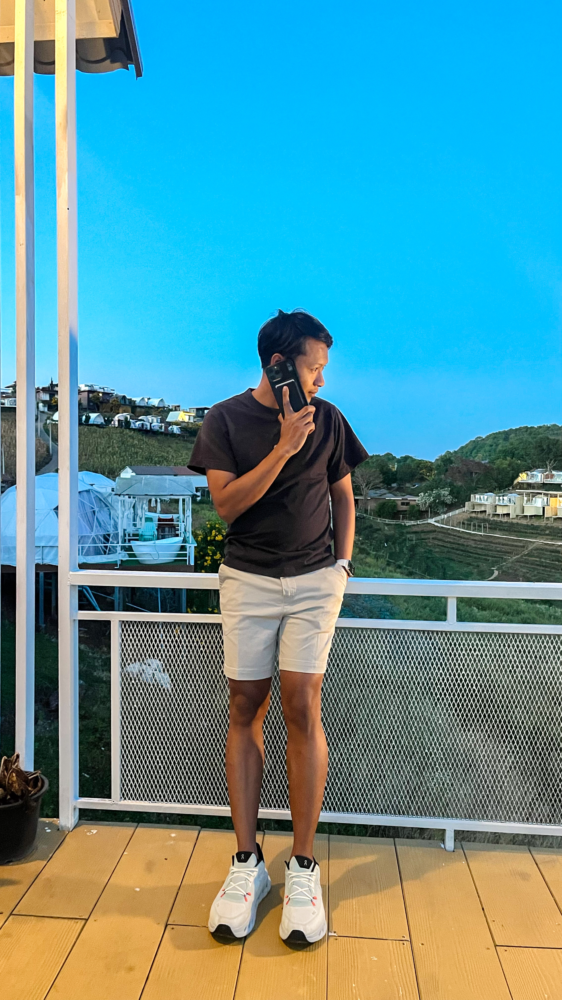

IT Support Specialist | Enterprise Environment
Experienced IT Support Specialist with strong expertise in Microsoft 365, Active Directory, Network Infrastructure, and Enterprise Troubleshooting. Able to support both onsite and remote users in corporate environments while maintaining high service standards and operational stability.